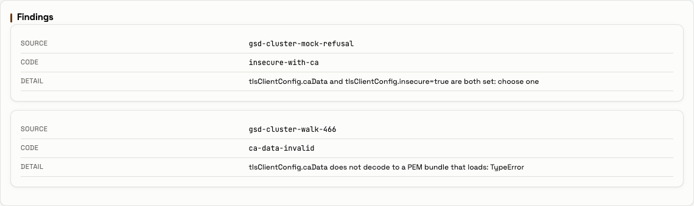
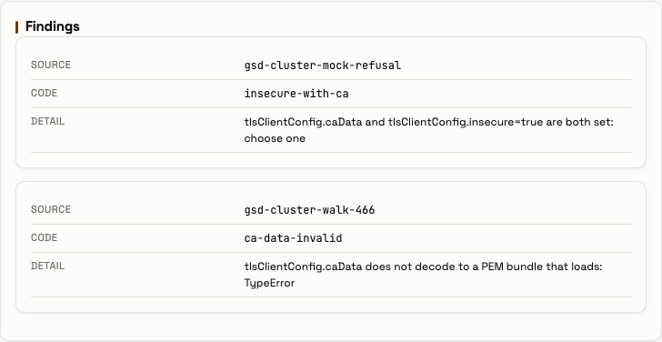
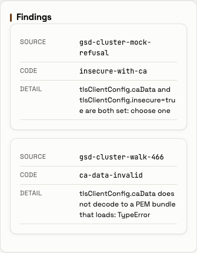

caData is one Secret's finding — 2026-09-28Outcome. On the CRC lab, running application 1.12.0 at 523e5d07be (evidence/before-version.txt), a throwaway
cluster Secret, gsd-cluster-walk-466, was created with a tlsClientConfig.caData whose text holds a no-break
space (U+00A0) and an em dash (U+2014) on a comment line above a real PEM certificate (evidence/created-secret.txt).
seen=7 accepted=5 refused=2 refused_now=gsd-cluster-walk-466:ca-data-invalid
and the finding's detail tlsClientConfig.caData does not decode to a PEM bundle that loads: TypeError. The pod log
from 11:22:30Z to 11:30:58Z has 0 Traceback, 0 'TypeError:' and 0 unhandled error discovering lines. Its one
line containing TypeError is that finding's own secret-refused line (evidence/refused-podlog.txt).polled <cluster>: lines
and there are 0 cluster-unreachable lines (evidence/refused-podlog.txt). At 11:31:13Z the API served the same
six, from the same sources, all ok, with last_poll from 11:30:58Z to 11:30:59Z
(evidence/refused-api.json).developer, the Cluster Configurations tab's Findings card listed gsd-cluster-walk-466, ca-data-invalid, with
the exact detail, at 1280, 768 and 375 px. All six clusters kept their cards. scripts/walk_466.py walk finished
with failures : [] and walk exit=0 (evidence/walk-output.txt, screenshots/).seen=6 accepted=5 refused=1 refused_cleared=gsd-cluster-walk-466:ca-data-invalid, the counts cycle 1 had logged
before the walk (evidence/cleared-podlog.txt, evidence/before-podlog.txt).The pre-1.12.0 behaviour, where TypeError stopped discovery of every cluster, was not reproduced on the lab.
The hermetic tests cover it (see "What the lab did not do"). The walk made two temporary changes to the lab: the
throwaway Secret and a grant (can-i no → yes → no). Both were removed. The walk ran no Helm, release-crc.sh or Argo CD command; after the deletes, /api/version still read
1.12.0 at 523e5d07be (evidence/after-version.txt, 11:31:42Z). The Argo Application was captured before the walk
only (evidence/before-rollout.txt). Nobody logged in as the fleet account. The kept PVCs have the same
UIDs before and after. The fleet Lease stayed at resourceVersion 5922168 with no holder. shared-qa's Secret
stayed at 2981054.
| Issue | Row | Verdict | Evidence |
|---|---|---|---|
| #466 | Deployed to CRC and walked: a throwaway Secret with a non-ASCII comment in its caData shows as a finding |
PASS | The Secret (evidence/created-secret.txt): name_value walk-466, server https://api.crc.testing:6443, config_keys ["bearerToken", "tlsClientConfig"], tlsClientConfig_keys ["caData"], annotations {}. The decoded caData has caData_non_ascii_code_points [8212, 160] and one -----BEGIN CERTIFICATE----- / -----END CERTIFICATE----- pair. The pod log (evidence/refused-podlog.txt): discovery cycle=8 … seen=7 accepted=5 refused=2 refused_now=gsd-cluster-walk-466:ca-data-invalid, then secret-refused phase=parse outcome=ca-data-invalid cycle=8 secret=gsd-cluster-walk-466 … detail="tlsClientConfig.caData does not decode to a PEM bundle that loads: TypeError". Before, the last discovery line was cycle=1 … seen=6 accepted=5 refused=1 (evidence/before-podlog.txt). The API's findings at 11:31:13Z were gsd-cluster-mock-refusal insecure-with-ca and gsd-cluster-walk-466 ca-data-invalid, with the exact detail (evidence/refused-api.json). At 1280, 768 and 375 px the tab reads PASS … one finding for gsd-cluster-walk-466: code ca-data-invalid, the exact detail (evidence/walk-output.txt, screenshots/01-1280-findings-walk-466.png, 02-768-…, 03-375-…). |
| #466 | No TypeError escapes discovery |
PASS | From 11:22:30Z to the 11:30:58Z capture (evidence/refused-podlog.txt): Traceback lines: 0, 'TypeError:' (an exception's own line): 0, TypeError lines other than a secret-refused finding's detail: 0, 'unhandled error discovering' lines: 0, ERROR lines: 0. Over the whole 1.12.0 pod, from 10:56:27Z to the 11:43:21Z capture: the same, and TypeError lines, all: 1, which is the finding's own line (evidence/whole-podlog.txt). |
| #466 | … and the other clusters stay served | PASS | Before the Secret, at 11:22:19Z, the API served dashboard (values), mock-privateca, mock-selfsigned, mock-trusted, shared-qa and shared-rnd (secret:gsd-cluster-<id>), all ok (evidence/before-api.json). With the Secret refused, at 11:31:13Z, it served the same six, from the same sources, all ok. last_poll was 11:30:58Z–11:30:59Z, and /api/clusters gave reachable: true for each (evidence/refused-api.json). In the pod log from 11:22:30Z there are 8 polled <cluster>: lines for each of the six, the last at 11:29:58Z–11:29:59Z, and 0 cluster-unreachable (evidence/refused-podlog.txt). The tab kept all six cards at each width (every enabled cluster still has its card: {"missing": []) and drew no card for walk-466 (evidence/walk-output.txt). |
| walk | Cleanup: the finding is gone and the refused count is back | PASS | The Secret and the grant were deleted by walk.gsd.lab/run=nonascii-466-2026-09-28 at 11:31:41Z (evidence/secret-delete.txt, evidence/grant-delete.txt). The next discovery line: cycle=10 … seen=6 accepted=5 refused=1 refused_cleared=gsd-cluster-walk-466:ca-data-invalid at 11:36:41Z. From 11:31:30Z to 11:43:21Z there are 0 secret-refused lines, 12 polled <cluster>: lines for each of the six, and 0 cluster-unreachable (evidence/cleared-podlog.txt). |
| walk | End state | PASS | can-i no → yes → no (evidence/before-cani.txt, granted-cani.txt, after-cani.txt, final-cani.txt). No object carries the run label (evidence/final-grant.txt No resources found, evidence/final-secret.txt []). A fresh login as developer at 11:33:10Z: "cluster_admin": false, /api/clusterconfigs 403, no Cluster Configurations tab (evidence/after-tier.txt). PVC UIDs f065b7a4-535c-4ef1-868c-58f5afee4953 (data) and 08c7d45c-a3eb-47be-8506-f24ea7a3e0e3 (report-artifacts) before and after. The fleet Lease stayed at resourceVersion=5922168 holderIdentity="", and shared-qa at resourceVersion=2981054 (evidence/before-*.txt, evidence/final-*.txt). fleet-login lines: 0 over the whole pod (evidence/whole-podlog.txt). |
| walk | No page error, no sideways scroll, reads only | PASS | no uncaught page errors: [] and no 'Dashboard API error' at each width. scrollWidth, innerWidth was [1280, 1280], [768, 768] and [375, 375]. the route guard blocked no request: [] (evidence/walk-output.txt). |
| When (UTC) | Step | File |
|---|---|---|
| 11:18:58 | Hermetic, before touching the lab: scripts/secret-466.sh check built the manifest and ran this checkout's parser on it (gsd 1.12.0, imported from this checkout, at git HEAD f7fa9c5ebc, ahead of the image's 523e5d07be). The result: {'secret': 'gsd-cluster-walk-466', 'code': 'ca-data-invalid', 'detail': 'tlsClientConfig.caData does not decode to a PEM bundle that loads: TypeError'} |
evidence/check-parse.txt |
| 11:20:18–21 | Before: /api/version "version":"1.12.0","commit":"523e5d07be"; the PVC UIDs; can-i no; no object and no Secret with the run label; the fleet Lease at resourceVersion=5922168, holderIdentity=""; shared-qa at resourceVersion=2981054. The pod log since the 1.12.0 pod's creation (10:56:27Z) had one discovery line, cycle=1 … seen=6 accepted=5 refused=1 … refused_now=gsd-cluster-mock-refusal:insecure-with-ca, and 24 polled <cluster>: lines for each of the six clusters. It had 0 cluster-unreachable, 0 Traceback, 0 TypeError, 0 unhandled error discovering and 0 ERROR lines |
evidence/before-*.txt |
| 11:20:46 | The rollout: the 1.12.0 ReplicaSet was created at 10:56:27Z. Argo CD's last operation on group-sync-dashboard ran from 10:56:10Z to 10:56:26Z at 523e5d07be…, Succeeded. It is Synced at f7fa9c5ebc… |
evidence/before-rollout.txt |
| 11:20:55 | The grant (scripts/grant.yaml): ClusterRole gsd-walk-crb-update and ClusterRoleBinding gsd-walk-crb-update-developer, both labelled walk.gsd.lab/run=nonascii-466-2026-09-28. can-i: yes |
evidence/grant-create.txt, evidence/granted-*.txt |
| 11:20:55 → 11:22:19 | A 70 s wait before the login. The dashboard caches each tier decision for visibilityTierTtlSeconds: 60 |
— |
| 11:22:19 | Before, through the API as developer ("cluster_admin": true): the six enabled clusters ok, one finding (gsd-cluster-mock-refusal, insecure-with-ca), last_discovery 2026-09-28T11:21:40Z |
evidence/before-api-output.txt, evidence/before-api.json |
| 11:22:38–39 | scripts/secret-466.sh create: secret/gsd-cluster-walk-466 created, uid 424a5469-8e6d-48fb-bb9b-f64143a5add1, from a mode-600 manifest in a mode-700 directory. The CA was subject=CN=walk-466, with notAfter=Oct 28 11:22:38 2026 GMT |
evidence/secret-create.txt, evidence/created-secret.txt |
| 11:26:40 | Discovery cycle 8 refused the Secret as ca-data-invalid |
evidence/refused-podlog.txt |
| 11:30:58 | The pod log from 11:22:30Z | evidence/refused-podlog.txt |
| 11:31:13 | Through the API, with the Secret refused | evidence/refused-api-output.txt, evidence/refused-api.json |
| 11:31:17–26 | The tab at 1280, 768 and 375 px | evidence/walk-output.txt, screenshots/ |
| 11:31:41 | The Secret, then the grant, deleted by the run label. Afterwards there was no Secret and no grant with the label, and can-i read no. The PVC UIDs were unchanged. The Lease stayed at 5922168 with no holder, shared-qa at 2981054, and the version at 1.12.0, 523e5d07be |
evidence/secret-delete.txt, evidence/grant-delete.txt, evidence/after-*.txt |
| 11:33:10 | A fresh login as developer after the tier cache had expired: "cluster_admin": false, /api/clusterconfigs 403, no tab |
evidence/after-tier.txt |
| 11:36:41 | Discovery cycle 10 cleared the finding: refused=1 refused_cleared=gsd-cluster-walk-466:ca-data-invalid |
evidence/cleared-podlog.txt |
| 11:43:21–22 | The end state, once more, and the pod log over the whole 1.12.0 pod | evidence/final-*.txt, evidence/whole-podlog.txt |
Cycle numbers. The two lines the walk depends on are cycle=8 at 11:26:40Z and cycle=10 at 11:36:41Z. The
dashboard logs a discovery line only when the set of clusters or findings changes
(local-development/gsd/poller.py#Poller._discover_once, "TRANSITIONS, NOT STATES"). No line between 11:31:30Z and
11:36:41Z names walk-466 (evidence/cleared-podlog.txt). That is consistent with cycle 9 having run before the
11:31:41Z delete took effect, but the log does not record cycle 9's instant, so this README does not claim one.
scripts/secret-466.sh follows the shape of the #447 walk's
reports/2026-09-28_batch-1110-walk/scripts/secret-447.sh. It uses oc create, not oc apply, so no
last-applied-configuration annotation copies the manifest into the object ("annotations": {} in
evidence/created-secret.txt). The script:
openssl req -x509 -newkey ec -pkeyopt ec_paramgen_curve:P-256 -nodes -days 30 -subj /CN=walk-466
into a mode-700 mktemp -d directory, which the exit trap removes. The key is never used again and never leaves
that directory;caData to the base64 of # lab walk #466 — non-breaking space here: + U+00A0 + a newline + the certificate;sha256~ + 44 random hex characters. It is never printed, and a sed redacts any sha256~ value
from the evidence;saTokenLookup, no ldapConnectionBootstrap and no insecure. The config keys are
bearerToken and tlsClientConfig, and tlsClientConfig holds caData alone. No fleet path can take this
Secret, and it never loaded at all: it was refused at parse.The walk did not reproduce the "before" of #466. Before 1.12.0, ssl.create_default_context(cadata=…) raised
TypeError for non-ASCII text, which the parser's except did not catch. The exception left discover and stopped
discovery of every cluster Secret. 1.12.0 adds TypeError to that except
(local-development/gsd/clusterconfig/parser.py#parse_secret, the comment
ssl raises TypeError, not SSLError, for non-ASCII cadata.). Two hermetic tests cover it:
test_a_non_ascii_cadata_is_refused_at_parse_not_raised and test_the_reader_keeps_a_good_cluster_beside_non_ascii_cadata
(local-development/tests/test_clusterconfig.py). They are the evidence for the "before". This folder shows only
the "after", on the deployed image.
scripts/capture.sh reads the fleet account's name from its Lease into a variable and writes <fleet account> in
its place. It also redacts every sha256~ value. scripts/walk_466.py leaves out the fleet section of
/api/clusterconfigs, which names the account, and redacts sha256~ values. After the walk, a search of this folder
found 0 files containing the fleet account's name and 0 sha256~ tokens, and the text PRIVATE KEY only in this
sentence.
export KUBECONFIG=<the lab kubeconfig>
R=reports/2026-09-28_nonascii-466-walk
GSD_VENV_PYTHON=local-development/.venv/bin/python bash "$R/scripts/secret-466.sh" check # hermetic
for k in version pvcs cani grant lease sharedqa secret; do bash "$R/scripts/capture.sh" "$k" before; done
bash "$R/scripts/capture.sh" podlog before <the pod's creationTimestamp>
oc create -f "$R/scripts/grant.yaml" # then wait 70 s for the tier cache
GSD_UI_PASSWORD=… python "$R/scripts/walk_466.py" api before
bash "$R/scripts/secret-466.sh" create # then wait for the discovery line naming walk-466
bash "$R/scripts/capture.sh" podlog refused <the create instant>
GSD_UI_PASSWORD=… python "$R/scripts/walk_466.py" api refused
GSD_UI_PASSWORD=… python "$R/scripts/walk_466.py" walk
bash "$R/scripts/secret-466.sh" delete
oc delete clusterroles.rbac.authorization.k8s.io,clusterrolebindings.rbac.authorization.k8s.io -l walk.gsd.lab/run=nonascii-466-2026-09-28
GSD_UI_PASSWORD=… python "$R/scripts/walk_466.py" after # after 70 s
bash "$R/scripts/capture.sh" podlog cleared <the delete instant> # after the next discovery line
GSD_UI_PASSWORD is developer's password, taken from crc console --credentials -o json into the environment only.


